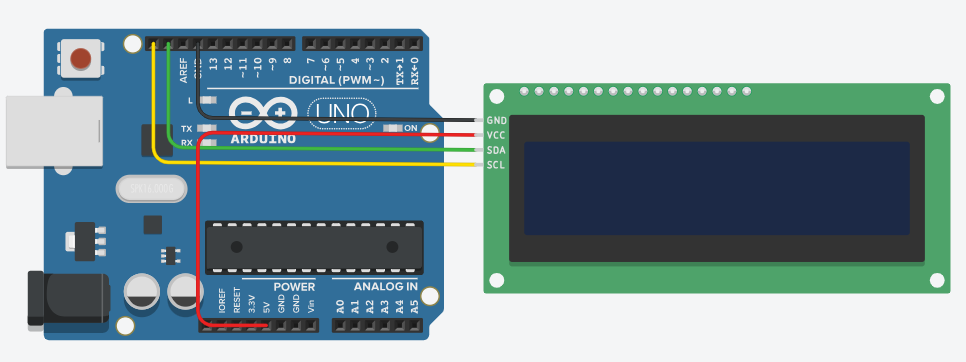
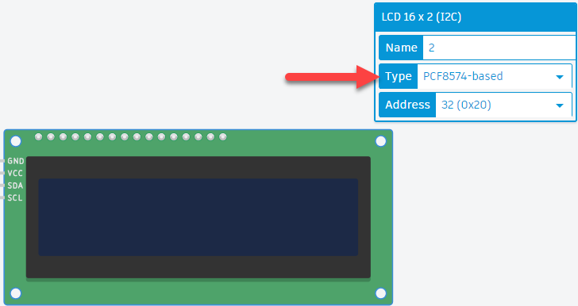
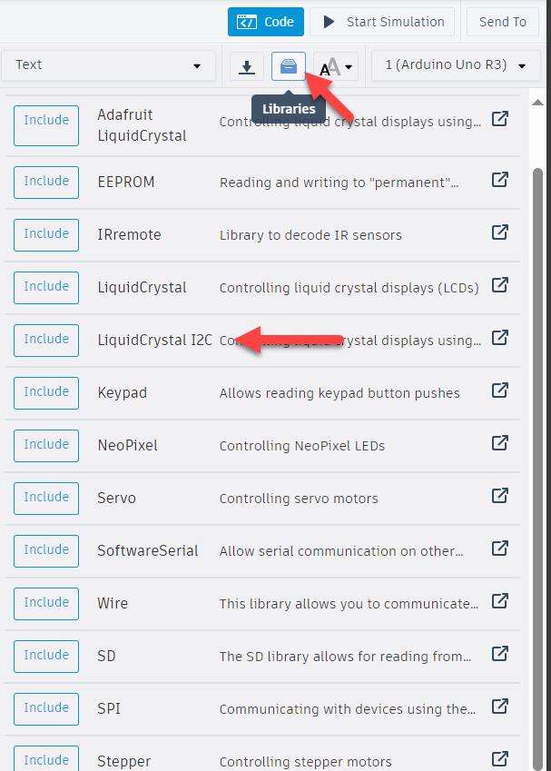

Deze oefening werk je uit in TinkerCAD. Gebruik een LCD display om op de eerste regel 'Microcontrollers' en op de tweede regel jouw naam te schrijven. Het display hangt via een PCF8574 aan dezelfde twee lijnen als in de vorige oefeningen.
Vertrek van dit project in TinkerCAD: labo 4 LCD display.

Merk op dat er maar vier draden naar het display gaan: GND, VCC, SDA en SCL. Zonder I²C zou zo'n display al gauw zes tot elf pinnen van je Arduino opeisen.
Verander het type van het LCD naar PCF8574.

Ga op zoek naar het adres van de LCD-module met de I2C scanner, of gebruik het adres dat TinkerCAD zelf invult. In het venster hierboven zie je dat staan bij Address.
De LCD-module gebruikt de gewone PCF8574 met basisadres 0x20, terwijl je in de vorige oefeningen met de A-versie op 0x38 werkte. Neem het adres dus niet blindelings over uit je vorige sketch.
In plaats van de Wire-bibliotheek rechtstreeks te gebruiken, zijn er twee bibliotheken geschikt om LCD displays via I²C aan te sturen:
Adafruit_LiquidCrystal.h, geschikt voor de MCP23008 IO-expander. Niet gebruiken.LiquidCrystal_I2C.h, geschikt voor de PCF8574 IO-expander. Deze heb je nodig.
De bibliotheek gebruikt Wire onderliggend, dus de I²C-communicatie verloopt nog altijd over SDA en SCL. Je schrijft de Wire-oproepen alleen niet meer zelf uit. Hoe je een bibliotheek toevoegt lees je op Bibliotheken gebruiken.
Als je op Google zoekt naar LiquidCrystal I2C, dan duurt het niet lang voor je deze link vindt: johnrickman/LiquidCrystal_I2C.
Klik de map examples open en zoek naar het HelloWorld-voorbeeld. HelloWorld is vaak het meest basale voorbeeld dat je kan vinden, en dus een goed startpunt.
Met lcd.init() start je het display op, met lcd.setCursor(kolom, rij) bepaal je waar de volgende tekst komt, en met lcd.print() schrijf je die tekst. Kolommen en rijen tellen vanaf 0, dus de tweede regel is rij 1. Zie je niets staan, probeer dan ook eens lcd.backlight().
Sla je oefening op.
Overloop volgende checklist om je oefening zelf te evalueren:
Alles gebeurt in de setup(). De tekst moet maar één keer geschreven worden, want het display onthoudt zelf wat er op staat. Zet je dit in de loop(), dan schrijf je duizenden keren per seconde dezelfde tekst en gaat het beeld flikkeren.
Het adres geef je mee aan de constructor, samen met het aantal kolommen en rijen van je display.
#include <Wire.h>
#include <LiquidCrystal_I2C.h>
// Adres zoals TinkerCAD het invult voor een PCF8574-module.
// Werk je met echte hardware, zoek het dan eerst met de I2C scanner.
const int adresLcd = 0x20;
const int aantalKolommen = 16;
const int aantalRijen = 2;
LiquidCrystal_I2C lcd(adresLcd, aantalKolommen, aantalRijen);
void setup()
{
lcd.init();
lcd.backlight();
lcd.setCursor(0, 0);
lcd.print("Microcontrollers");
lcd.setCursor(0, 1);
lcd.print("Jouw naam"); // vervang dit door je eigen naam
}
void loop()
{
// De tekst blijft staan, er hoeft niets herhaald te worden
}